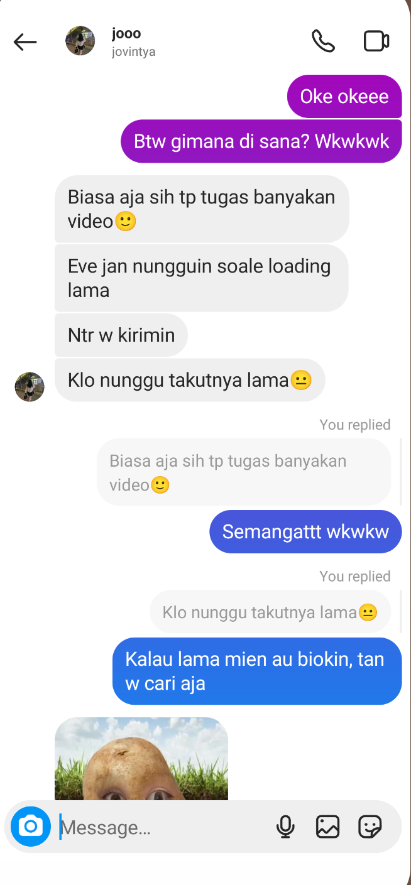

Selamat Datang di Destinasi Berikutnya, tahun 2021
Tahun 2021, tahun pertama kita mulai pisah sekolah. Waktu itu masih sekolah online, jadi gak terlalu merasa kehilangan. Mungkin
karena harus adaptasi dengan lingkungan yang baru, ya, pikiran kita jadi hanya fokus pada apa yang benar-benar ada di hadapan
kita. Di tahun ini, kita berdua masih ada komunikasi, walau nggak sesering itu. Waktu tau lu pindah, jujur w lumayan sedih. Yah,
namanya juga teman yang udah sefrekuensi dan bareng-bareng beberapa tahun. Cuman, gak mungkin larang, 'kan?
Yang menentukan hidup kita, ya, cuman boleh kita sendiri. Dengan melarang lu pindah juga bukan solusi yang baik. Karena
pasti lu dan keluarga lu udah punya alasan sendiri kenapa harus pindah and I appreciate that. Justru w merasa bangga sama lu.
Pindah dan hidup di tempat yang baru bukan hal yang mudah. Karena sebagai pendatang, seringkali terjadi hal yang kurang
mengenakan. Tapi, waktu itu, lu berani bertahan. Hehehe so proud of you.